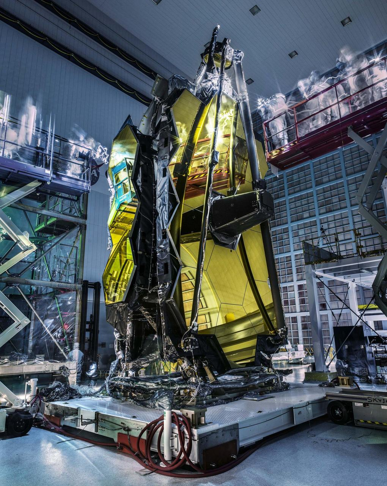

A culture built on service, learning, and belonging.
SSAI is a family-led, woman-owned company that has pursued science with passion since 1977. Our goal is to cultivate a diverse culture of creativity, collaborative innovation, and belonging — an environment where all are welcomed, heard, and celebrated. A central theme runs through it: service.
Welcomed, heard, and celebrated.
Many of our people work in a badgeless environment alongside government scientists and fellow contractors — beside NASA Goddard and across centers and field sites nationwide. Flexible hours and locations and a genuine commitment to work-life balance let people do their best work and still have a life around it.
That environment is built, not assumed. We hold ourselves to our values — Trust, Integrity, Teamwork, Passion, and Accountability — and we have been named a Washington Post Top Workplace five years running. The result is a place where curiosity is rewarded and where the science is real.
We invest in our people.
Investing in our people sits at the center of our strategy. SSAI University (SSAIU) is the centralized umbrella for the education and development of our workforce — created to build a culture of learning that prepares employees to meet changing needs as the science, the missions, and the tools evolve.
It brings training, mentoring, and continued learning under one roof, so growth is a path you can see rather than a perk you have to chase. That commitment is recognized beyond our walls: SSAI was named to TopWorkplaces' 2025 Professional Development Top Workplaces list.
- A single home for training, mentoring, and continued learning
- Development paths that follow the science as it evolves
- Recognized on the 2025 Professional Development Top Workplaces list
 NASA / Ames Research Center
NASA / Ames Research Center
Three ways we grow together.
Development at SSAI is intentional. SSAIU anchors it, mentorship carries it day to day, and our values keep it honest — so people are challenged intellectually and rewarded for excellent work.
Learning, centralized
SSAI University gives every employee a single, deliberate home for skills and growth — from technical depth to leadership — built to keep pace with changing mission needs.
SSAIUMentorship that sticks
Working badgeless beside government scientists and seasoned colleagues, newer staff learn the craft the way it is actually practiced — on real missions, with people who have done it before.
MentoringRewarded for ideas
Innovative thinking and excellent performance are recognized, not just expected. Curiosity is part of the job description, and good ideas have somewhere to go.
RecognitionWhere careers in science begin.
New graduates and students are a real part of how SSAI renews itself. Internships place students alongside scientists and engineers on live missions — instrument testing, mission operations, data systems, and analysis — so the first line on a résumé is real work, not a simulation.
It is the same path many SSAI careers have followed: arrive curious, learn from people who have flown instruments and operated missions, and grow into the work. New graduates and students are encouraged to ask about SSAI internships when they apply.
 NASA / Goddard Space Flight Center
NASA / Goddard Space Flight Center
 NASA / Johnson Space Center
NASA / Johnson Space Center
 NASA / Goddard Space Flight Center
NASA / Goddard Space Flight Center
 NASA / Kennedy Space Center
NASA / Kennedy Space Center
Service that fits naturally.
SSAI welcomes veterans and military-connected professionals, whose mission discipline and service ethic fit naturally with our work.
The habits that define military service — operating under pressure, owning the outcome, taking care of the team — are the same habits that keep instruments calibrated and missions running. We have built a culture where that experience is valued and where transitioning professionals find work that still matters.
SSAI is proud to be an Affirmative Action / Equal Opportunity Employer. We encourage minorities, women, protected veterans, and individuals with disabilities to apply for any position for which they feel qualified — and every applicant is considered on merit.
A family company that makes room.
SSAI has been family-led and woman-owned since 1977, when Dr. Om P. and Sara Bahethi founded the company. That heritage shapes how the place feels: a small-business spirit where people are known, where the door is open, and where belonging is treated as something the company is responsible for building.
Our goal is a diverse culture of creativity, collaborative innovation, and belonging — an environment where all are welcomed, heard, and celebrated in an equitable and supportive manner. We do not tolerate discrimination or harassment of any kind, and reasonable accommodation in the application and interview process is available on request.
- Family-led and woman-owned since 1977
- An SBA-recognized small business, close-knit by design
- Belonging treated as a shared responsibility, not a slogan

NASA / Goddard Space Flight Center / Chris GunnService that reaches far beyond us.
Service does not end at the office door. SSAI supports the GLOBE Program — a worldwide, hands-on science and education effort that connects students and teachers across 125 countries and more than 35,000 schools to real Earth-science data. Closer to home, the Bahethi Family Foundation extends our founders' commitment to education and community into the next generation.
A culture with reach.
 NASA / Goddard Space Flight Center / Bill Hrybyk
NASA / Goddard Space Flight Center / Bill Hrybyk